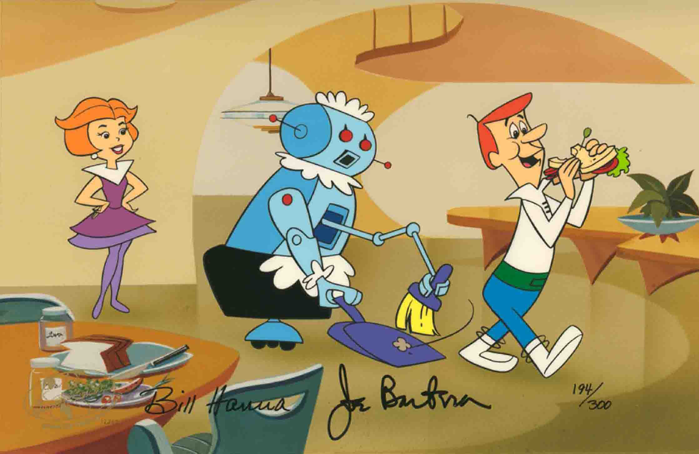
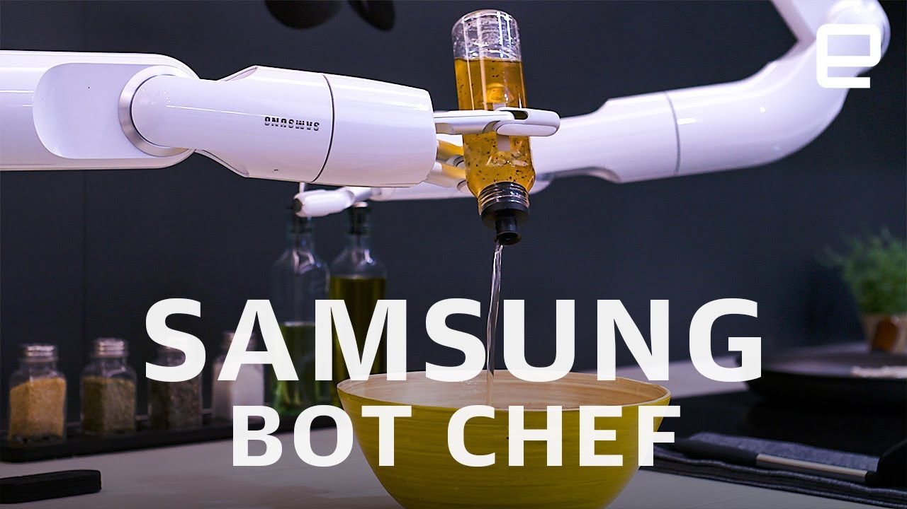

People often wonder when we will have certain technologies. It's hard to say with most of them as we don't know all of the roadblocks ahead of us. Yes, it wasn't long after the Wright Brothers that we got the Apollo Project, but we've also had Virtual Reality since 1977 (Nelson, Ted (March 1982). "Report on Siggraph '81". Creative Computing.) and it still kind of sucks.
I think it's more interesting to discuss what technologies we will have before a specific technology. How far away do those technologies seem?
Technologies I expect to have before self-driving cars:
- Butler bots

Slower movement. No weather.
I know we have Roombas, but ask anyone with a Roomba if they still own a broom.
- Chef bots

I think the whole self-driving car problem is too hard given the constraints that we've put on it today. My suggestion: get us the flying cars we were promised and make them autonomous. We get rid of several problems we haven't really solved:
- Avoiding human drivers
- Avoiding pedestrians
- Handing construction zones
- Handing traffic accidents
There might sill be accidents, but they won't likely alter the flow of traffic in the air... yes, there will be some other side effects of such accidents in the sky, but if we build in some disaster recovery systems to these things (parachutes for example), these accidents could be much less dangerous. This would be esspecially true if we found that by having more direct routes to our destinations and less traffic congestion, speeds can be reduced along with travel times.
in exchange for some problems that we have solved:
-
Making things fly
-
Building suitable take off and landing spaces